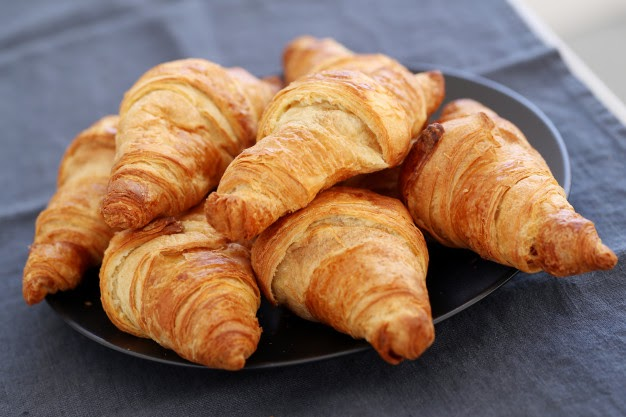

Comidas típicas de Paris
Crepe
O crepe é um prato muito tradicional na culinária francesa.É feito basicamente de farinha de trigo e parece com uma massa de panqueca bem fininha.Há versões doces e salgadas.
Macaron
Quem nunca ouviu falar ou viu fotos dos famosos macarons franceses? São uma espécie de biscoito feito de farinha de amêndoas. Crocante por fora e molinho por dentro, há diversas opções de sabores, como chocolate, maracujá, pistache, baunilha, limão, café, caramelo.
Croissant
Ele é um “pãozinho” crocante e doce feito com massa folhada e recheado com manteiga. É um dos pratos mais famosos de Paris e pode ser encontrado do aeroporto até todas as padarias da cidade.

Canard (Pato)
O famoso magret de Canard ou o peito/filé do pato é degustado crocante por fora, porém rosa por dentro.Na França você pode encontrar o magret de canard em praticamente todas as brasseries. Sem sombra de duvidas, é o queridinho dos franceses. Ele é originário do Sudoeste da França do departamento de Gers que fica na região Occitani